Основи програмування
Звіт до лабораторної роботи №8
Покажчики та посилання. Покажчики на функції • Варіант 6
Оберіть розділ звіту
Лабораторна робота №8 / 01 з 08
1. Мета роботи
- Ознайомитися з особливостями посилальних типів даних.
- Опанувати технологію застосування посилальних типів даних.
- Навчитися розробляти алгоритми та програми із застосуванням посилальних типів даних.
Лабораторна робота №8 / 02 з 08
2. Умова задачі
Варіант 6
Варіант 6 (у таблиці 24 варіанти, 30 - 24 = 6). Завдання позначене символом * і є завданням підвищеної складності.
Розробити програму, команди меню якої передбачають такі дії:
- Згенерувати розріджену матрицю з парною кількістю рядків, кількість нульових елементів якої більше за 60%. Збереження матриці в оперативній пам'яті здійснити в стислому рядковому форматі CRS (CSR) у вигляді трьох одновимірних масивів: AN зберігає значення ненульових елементів в кількості NNZ, JA зберігає номери стовпців з ненульовими елементами матриці в кількості NNZ, IA має по одному елементу на рядок матриці і кодує індекс ненульового елемента в AN, з якого починається даний рядок. (Він може містити додатковий кінцевий елемент, для якого встановлено значення NNZ.)
- Вивести матрицю на екран по рядках та стовпцях.
- Вивести на екран одновимірні масиви, що зберігають розріджену матрицю.
- Визначити скалярний добуток кожного i-го рядка на кожний i+1-ий рядок за алгоритмом обробки розріджених матриць.
- Визначити скалярний добуток кожного i-го рядка на кожний i+1-ий рядок за стандартним алгоритмом обробки матриць.
- Порівняти час виконання операцій і обсяг пам'яті при використанні цих двох алгоритмів.
Загальні вимоги методички, за невиконання яких оцінка знижується на 50%:
- програма повинна мати меню команд, виконання яких здійснюється через покажчики на функції;
- пам'ять під масив (матрицю) виділяється та звільняється динамічно з використанням покажчиків;
- передача масивів (матриць) у функції здійснюється через покажчики;
- функції повертають масиви (матриці) через покажчики;
- доступ до елементів масивів (матриць) здійснюється через покажчики.
Заборонено використовувати бібліотеку стандартних шаблонів STL.
Лабораторна робота №8 / 03 з 08
3. Аналіз задачі
Формат CRS
У розрідженій матриці багато нулів, і зберігати їх немає сенсу. У форматі CRS лишаються тільки ненульові елементи. Матриця переглядається по рядках зліва направо, а дані записуються в три масиви:
- AN зберігає значення елементів, їх кількість NNZ;
- JA зберігає номер стовпця кожного елемента;
- IA для кожного рядка зберігає місце в AN, з якого цей рядок починається.
Останній елемент IA дорівнює NNZ. Рядок i займає в AN місця від IAi до IAi+1 - 1, а для порожнього рядка IAi = IAi+1. У масивах нумерація йде з 0, у таблиці результатів рядки підписано з 1.
Скалярний добуток рядків
Кількість рядків парна, тому рядки взято парами: (1, 2), (3, 4), (5, 6) і так далі. При n рядках виходить n / 2 добутків:
Стандартний алгоритм перебирає всі m стовпців і множить кожну пару елементів, зокрема нульові.
Алгоритм для розрідженої матриці працює лише з масивами CRS. Множаться тільки елементи зі спільного стовпця. Номери стовпців у рядку йдуть за зростанням, а k і l показують на поточні елементи першого і другого рядка пари:
- якщо JAk = JAl, стовпець спільний: елементи множаться, k і l збільшуються;
- якщо JAk < JAl, збільшується k;
- інакше збільшується l.
Цикл закінчується, коли дійшли до кінця одного з рядків.
Генерація і введення матриці
Користувач вводить розміри матриці і відсоток нулів p від 61 до 99. Кількість ненульових елементів обчислюється за формулою:
Ненульові значення від -9 до 9 ставляться у випадкові клітинки. Якщо клітинка вже зайнята або випало 0, спроба не рахується.
Кількість рядків має бути парною, інакше програма просить увести її ще раз.
Команди 2 в умові немає. Вона вводить матрицю з клавіатури, щоб можна було перевірити результат вручну. Для такої матриці теж перевіряється умова про 60% нулів, і якщо її не виконано, матриця не зберігається.
Порівняння часу і пам'яті
Час вимірюється функцією clock(). Одне обчислення надто швидке, тому воно
повторюється c разів, однаково для обох алгоритмів:
Програма виводить час усіх повторів і час одного обчислення.
Пам'ять рахується через sizeof. На int припадає 4 байти, на
покажчик 8 байтів:
На один ненульовий елемент CRS витрачає два числа: значення і номер стовпця. За умовою таких елементів менше 40%, тому CRS займає менше пам'яті, ніж звичайна матриця.
Виконання вимог методички
Таблиця 1 - Як виконано обов'язкові вимоги
| Вимога | Реалізація |
|---|---|
| меню через покажчики на функції | у runMenu є таблиця
commands з адресами семи функцій; вибрана адреса записується в покажчик
command, а виклик іде через нього: (*command)() |
| динамічна пам'ять | матриця і масиви виділяються операцією new,
звільняються операцією delete[] |
| передача через покажчики | convertToCrs(int** table),
printArray(int* array, int size), функції обчислення добутків |
| повернення через покажчики | createMatrix повертає int**,
calculateSparseProducts і calculateStandardProducts повертають
int* |
| доступ через покажчики | лише вирази *(array + i) і
*(*(table + i) + j); індексації елементів дужками в програмі немає |
Масив результатів звільняється в printProducts або одразу після вимірювання.
Матриця і масиви CRS звільняються перед створенням нової матриці та перед завершенням
програми.
Перевірка введення
Усі числа вводяться однією функцією inputNumber: якщо введено не число або
число поза межами, програма виводить повідомлення і чекає нове значення.
Команди 3-7 не виконуються, поки матрицю не створено.
Елементи матриці і добутки мають тип int, час зберігається у
float.
Структура програми
Таблиця 2 - Функції програми
| Функція | Призначення |
|---|---|
main | виклик основних кроків програми |
welcome | виведення даних про автора та умови задачі |
inputNumber | введення цілого числа з перевіркою |
inputSize | введення розмірів, перевірка парності рядків |
createMatrix | виділення пам'яті, повернення покажчика на нульову матрицю |
convertToCrs | заповнення масивів AN, JA, IA |
freeMemory | звільнення матриці й масивів CRS |
generateMatrix | команда 1: генерація матриці |
enterMatrix | команда 2: введення матриці з клавіатури |
showMatrix | команда 3: виведення матриці |
printArray | виведення одновимірного масиву |
showArrays | команда 4: виведення масивів AN, JA, IA |
calculateSparseProducts | добутки за масивами CRS |
calculateStandardProducts | добутки за повною матрицею |
printProducts | виведення таблиці добутків, звільнення масиву |
showSparseProducts | команда 5: добутки за алгоритмом для розрідженої матриці |
showStandardProducts | команда 6: добутки за стандартним алгоритмом |
compareAlgorithms | команда 7: порівняння часу і пам'яті |
runMenu | меню, виклик команд через покажчик на функцію |
Джерела: Ковалюк Т.В. Алгоритмізація та програмування, 2024; Ковалюк Т.В., Петрівський В.Я. Гарний стиль програмування мовами C, C++, C#, 2025; Писсанецки С. Технология разреженных матриц; Deitel P., Deitel H. C++ How to Program (розділ про покажчики).
Лабораторна робота №8 / 04 з 08
4. Блок-схеми алгоритмів
Варіант 6

welcome (виведення даних про автора та умови задачі)
inputNumber (введення цілого числа з перевіркою)
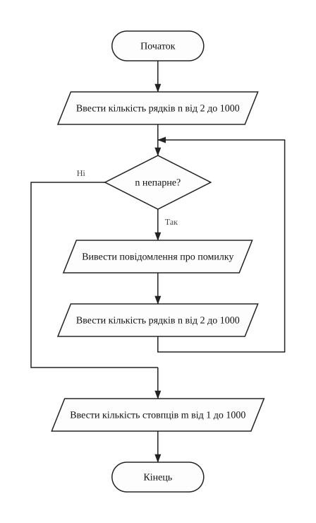
inputSize (введення розмірів матриці)
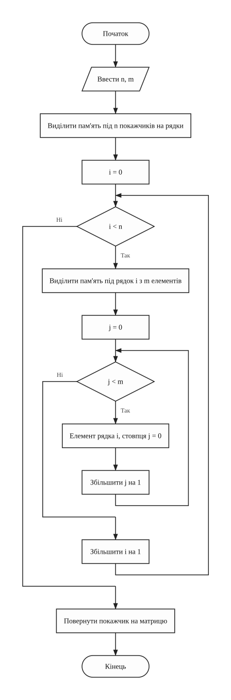
createMatrix (виділення пам'яті під нульову матрицю)
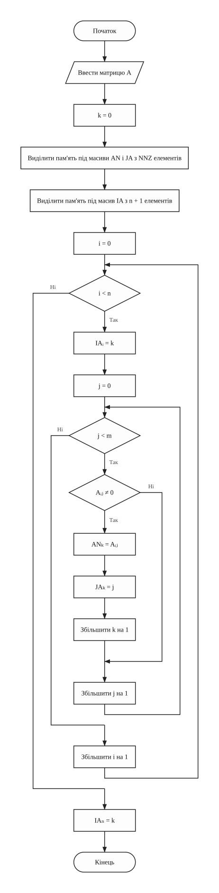
convertToCrs (заповнення масивів AN, JA, IA за матрицею)
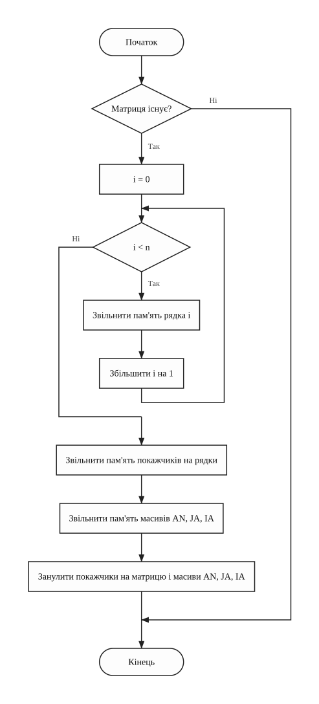
freeMemory (звільнення пам'яті матриці та масивів CRS)
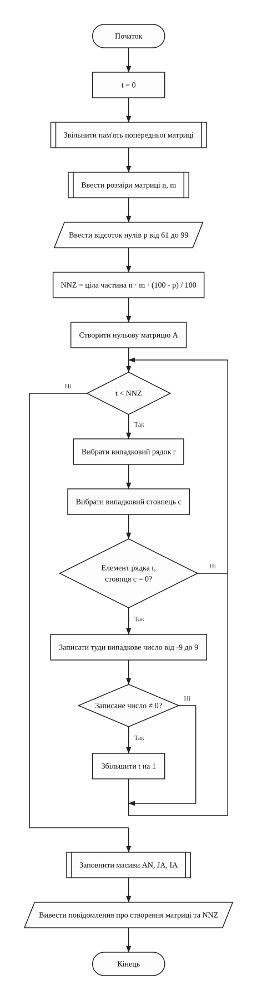
generateMatrix (команда 1: генерація матриці)
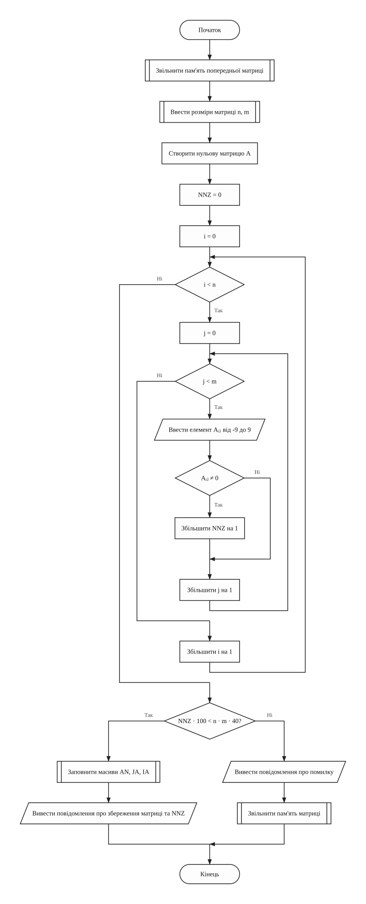
enterMatrix (команда 2: введення матриці з клавіатури)
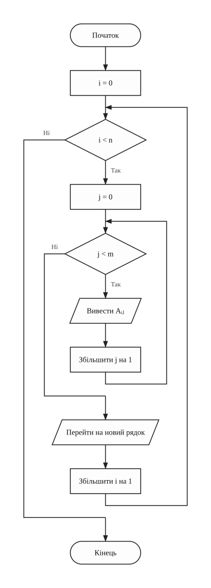
showMatrix (команда 3: виведення матриці)
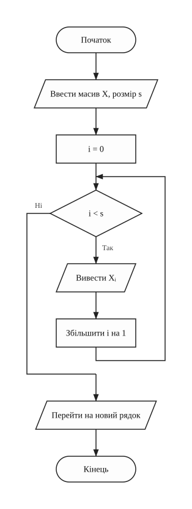
printArray (виведення одновимірного масиву)
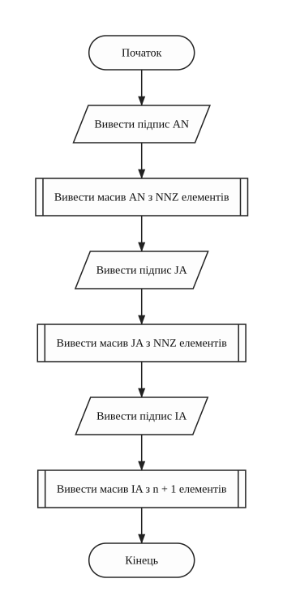
showArrays (команда 4: виведення масивів AN, JA, IA)
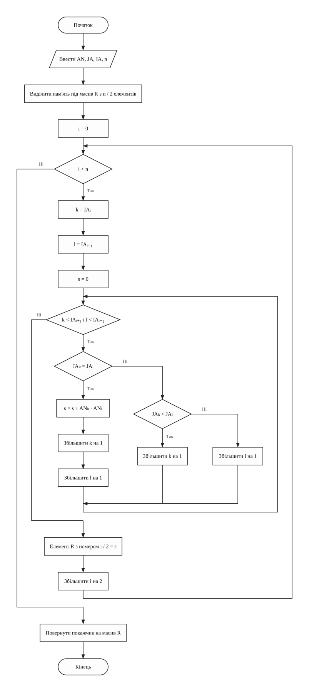
calculateSparseProducts (скалярні добутки за масивами CRS)
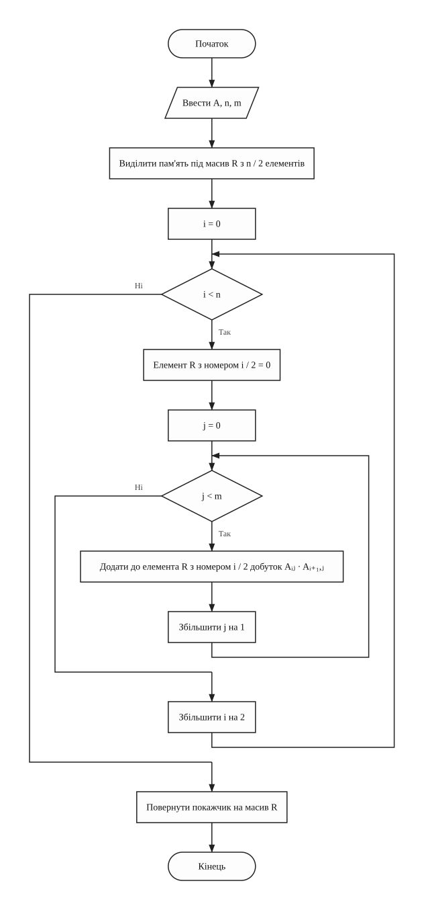
calculateStandardProducts (скалярні добутки за повною матрицею)
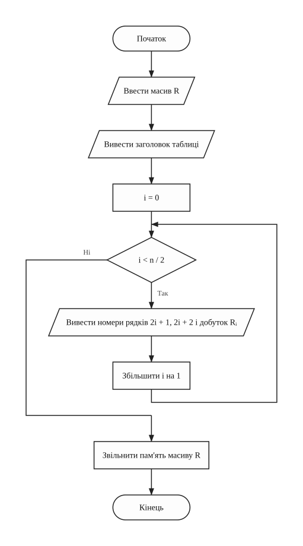
printProducts (виведення таблиці добутків і звільнення масиву)
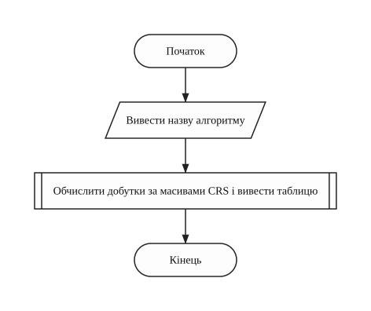
showSparseProducts (команда 5: добутки за алгоритмом для розрідженої матриці)
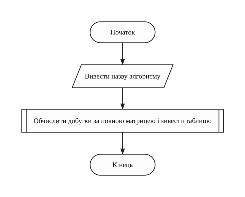
showStandardProducts (команда 6: добутки за стандартним алгоритмом)
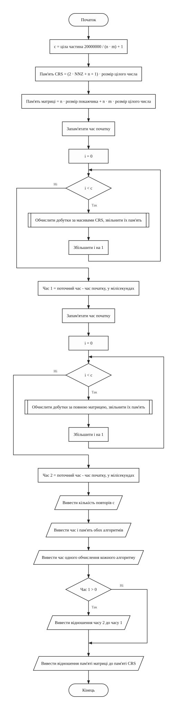
compareAlgorithms (команда 7: порівняння часу і пам'яті)
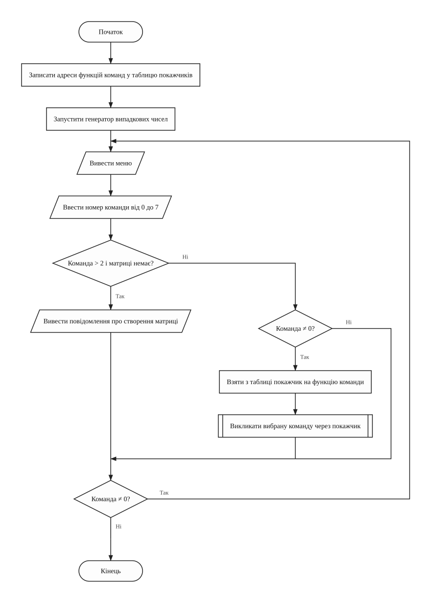
runMenu (меню: виклик команд через покажчик на функцію)
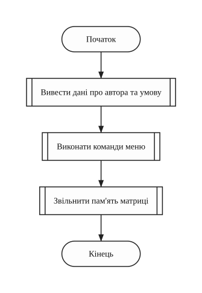
main (головна функція)Лабораторна робота №8 / 05 з 08
5. Текст програми
Варіант 6
Файл task1.cpp
/////////////////////////////////////////////////////////////////////
// Ім'я файлу: task1.cpp
// Автор: Шимко Матвій, гр. ІПЗ-11(3)
// Номер версії модуля: version 1
// Запланована ціль: лабораторна робота №8, варіант 6.
// Зберегти розріджену матрицю у форматі CRS, знайти
// скалярні добутки рядків двома алгоритмами
// і порівняти час та обсяг пам'яті.
/////////////////////////////////////////////////////////////////////
#include <cstdlib>
#include <ctime>
#include <iomanip>
#include <iostream>
using namespace std;
//=========== константи
const int MAX_SIZE = 1000; // найбільша кількість рядків і стовпців
const int MAX_VALUE = 9; // найбільший модуль елемента матриці
const int ZERO_LIMIT = 60; // нулів має бути більше за цей відсоток
const int COMMAND_COUNT = 7; // кількість команд меню без виходу
const int CREATE_COMMANDS = 2; // команд, що створюють матрицю
const int OPERATION_LIMIT = 20000000; // для підбору кількості повторів
//=========== глобальні змінні
int** matrix = NULL; // покажчик на матрицю
int* values = NULL; // масив AN: ненульові елементи
int* columnNumbers = NULL; // масив JA: номери стовпців цих елементів
int* rowStarts = NULL; // масив IA: початки рядків у масиві AN
int rowCount = 0; // кількість рядків
int columnCount = 0; // кількість стовпців
int nonZeroCount = 0; // кількість ненульових елементів NNZ
int choice = 0; // номер команди меню
void (*command)() = NULL; // покажчик на функцію вибраної команди
/*
* Функція виводить дані про автора та умову задачі
* Параметри: немає
* Значення, що повертаються: немає
*/
void welcome()
{
cout << "Lab work 8. Variant 6." << endl;
cout << "Author: Matvii Shimko, group IPZ-11(3)" << endl << endl;
cout << "Sparse matrix in CRS format: scalar products of rows 1 and 2,"
<< endl;
cout << "3 and 4, and so on by the sparse and the standard algorithm."
<< endl;
}
/*
* Функція вводить ціле число. Якщо введено не число або число
* поза межами, введення повторюється
* Параметри: minValue, maxValue - межі числа
* Значення, що повертаються: введене число
*/
int inputNumber(int minValue, int maxValue)
{
int number = 0;
cin >> number;
while (cin.fail() || number < minValue || number > maxValue)
{
cin.clear(); // скинути помилку введення
cin.ignore(1000, '\n'); // і пропустити неправильний рядок
cout << "Error! Enter a number from " << minValue << " to " << maxValue
<< ": ";
cin >> number;
}
return number;
}
/*
* Функція вводить розміри матриці. Кількість рядків має бути парною
* Параметри: немає
* Значення, що повертаються: немає
*/
void inputSize()
{
cout << "Enter an even number of rows (from 2 to " << MAX_SIZE << "): ";
rowCount = inputNumber(2, MAX_SIZE);
while (rowCount % 2 != 0)
{
cout << "Error! The number of rows must be even. Enter it again: ";
rowCount = inputNumber(2, MAX_SIZE);
}
cout << "Enter the number of columns (from 1 to " << MAX_SIZE << "): ";
columnCount = inputNumber(1, MAX_SIZE);
}
/*
* Функція виділяє пам'ять під матрицю і заповнює її нулями
* Параметри: rows, columns - розміри матриці
* Значення, що повертаються: покажчик на створену матрицю
*/
int** createMatrix(int rows, int columns)
{
int** table = new int*[rows];
for (int i = 0; i < rows; i++)
{
*(table + i) = new int[columns];
for (int j = 0; j < columns; j++)
{
*(*(table + i) + j) = 0;
}
}
return table;
}
/*
* Функція виділяє масиви AN, JA, IA і заповнює їх за матрицею
* Параметри: table - покажчик на матрицю
* Значення, що повертаються: немає
*/
void convertToCrs(int** table)
{
int position = 0; // номер наступного вільного місця в AN і JA
values = new int[nonZeroCount];
columnNumbers = new int[nonZeroCount];
rowStarts = new int[rowCount + 1];
for (int i = 0; i < rowCount; i++)
{
*(rowStarts + i) = position;
for (int j = 0; j < columnCount; j++)
{
if (*(*(table + i) + j) != 0)
{
*(values + position) = *(*(table + i) + j);
*(columnNumbers + position) = j;
position++;
}
}
}
*(rowStarts + rowCount) = position; // кінцевий елемент IA дорівнює NNZ
}
/*
* Функція звільняє всю динамічну пам'ять матриці й масивів CRS
* Параметри: немає
* Значення, що повертаються: немає
*/
void freeMemory()
{
if (matrix != NULL)
{
for (int i = 0; i < rowCount; i++)
{
delete[] *(matrix + i);
}
delete[] matrix;
delete[] values;
delete[] columnNumbers;
delete[] rowStarts;
// щоб наступний виклик не звільнив ті самі масиви вдруге
matrix = NULL;
values = NULL;
columnNumbers = NULL;
rowStarts = NULL;
}
}
/*
* Команда меню: генерує матрицю із заданим відсотком нулів. Ненульові
* значення ставляться у випадкові клітинки, зайняті обходяться
* Параметри: немає
* Значення, що повертаються: немає
*/
void generateMatrix()
{
int row = 0;
int column = 0;
int placed = 0; // скільки ненульових елементів уже поставлено
int zeroPercent = 0;
freeMemory();
inputSize();
cout << "Enter the percent of zeros (from " << ZERO_LIMIT + 1
<< " to 99): ";
zeroPercent = inputNumber(ZERO_LIMIT + 1, 99);
nonZeroCount = rowCount * columnCount * (100 - zeroPercent) / 100;
matrix = createMatrix(rowCount, columnCount);
while (placed < nonZeroCount)
{
row = rand() % rowCount;
column = rand() % columnCount;
if (*(*(matrix + row) + column) == 0)
{
// значення від -MAX_VALUE до MAX_VALUE, нуль просто не рахується
*(*(matrix + row) + column) =
rand() % (2 * MAX_VALUE + 1) - MAX_VALUE;
if (*(*(matrix + row) + column) != 0)
{
placed++;
}
}
}
convertToCrs(matrix);
cout << "Matrix is created, NNZ = " << nonZeroCount << endl;
}
/*
* Команда меню: вводить матрицю з клавіатури, щоб перевірити програму
* на прикладі, порахованому вручну
* Параметри: немає
* Значення, що повертаються: немає
*/
void enterMatrix()
{
freeMemory();
inputSize();
matrix = createMatrix(rowCount, columnCount);
nonZeroCount = 0;
for (int i = 0; i < rowCount; i++)
{
cout << "Enter row " << i + 1 << " (" << columnCount << " numbers): ";
for (int j = 0; j < columnCount; j++)
{
*(*(matrix + i) + j) = inputNumber(-MAX_VALUE, MAX_VALUE);
if (*(*(matrix + i) + j) != 0)
{
nonZeroCount++;
}
}
}
if (nonZeroCount * 100 < rowCount * columnCount * (100 - ZERO_LIMIT))
{
convertToCrs(matrix);
cout << "Matrix is stored, NNZ = " << nonZeroCount << endl;
}
else
{
cout << "Error! Zeros must be more than " << ZERO_LIMIT << "%." << endl;
freeMemory();
}
}
/*
* Команда меню: виводить матрицю по рядках та стовпцях
* Параметри: немає
* Значення, що повертаються: немає
*/
void showMatrix()
{
for (int i = 0; i < rowCount; i++)
{
for (int j = 0; j < columnCount; j++)
{
cout << setw(3) << *(*(matrix + i) + j);
}
cout << endl;
}
}
/*
* Функція виводить одновимірний масив в один рядок
* Параметри: array - покажчик на масив, size - кількість елементів
* Значення, що повертаються: немає
*/
void printArray(int* array, int size)
{
for (int i = 0; i < size; i++)
{
cout << *(array + i) << " ";
}
cout << endl;
}
/*
* Команда меню: виводить масиви AN, JA, IA
* Параметри: немає
* Значення, що повертаються: немає
*/
void showArrays()
{
cout << "AN: ";
printArray(values, nonZeroCount);
cout << "JA: ";
printArray(columnNumbers, nonZeroCount);
cout << "IA: ";
printArray(rowStarts, rowCount + 1);
}
/*
* Функція рахує добутки пар рядків за масивами CRS. Стовпці в рядку йдуть
* за зростанням, тому менший номер стовпця просувається вперед, а
* множаться лише елементи зі спільного стовпця
* Параметри: elements - покажчик на AN, columns - покажчик на JA,
* starts - покажчик на IA, rows - кількість рядків
* Значення, що повертаються: покажчик на масив добутків
*/
int* calculateSparseProducts(int* elements, int* columns, int* starts, int rows)
{
int* result = new int[rows / 2];
for (int i = 0; i < rows; i = i + 2)
{
int first = *(starts + i); // поточний елемент першого рядка
int second = *(starts + i + 1); // поточний елемент другого рядка
int sum = 0;
while (first < *(starts + i + 1) && second < *(starts + i + 2))
{
if (*(columns + first) == *(columns + second))
{
sum = sum + *(elements + first) * *(elements + second);
first++;
second++;
}
else if (*(columns + first) < *(columns + second))
{
first++;
}
else
{
second++;
}
}
*(result + i / 2) = sum;
}
return result;
}
/*
* Функція рахує добутки пар рядків за повною матрицею
* Параметри: table - покажчик на матрицю, rows, columns - її розміри
* Значення, що повертаються: покажчик на масив добутків
*/
int* calculateStandardProducts(int** table, int rows, int columns)
{
int* result = new int[rows / 2];
for (int i = 0; i < rows; i = i + 2)
{
*(result + i / 2) = 0;
for (int j = 0; j < columns; j++)
{
*(result + i / 2) = *(result + i / 2)
+ *(*(table + i) + j) * *(*(table + i + 1) + j);
}
}
return result;
}
/*
* Функція виводить таблицю добутків і звільняє пам'ять цього масиву
* Параметри: result - покажчик на масив добутків
* Значення, що повертаються: немає
*/
void printProducts(int* result)
{
cout << setw(10) << "rows" << setw(10) << "product" << endl;
for (int i = 0; i < rowCount / 2; i++)
{
cout << setw(5) << 2 * i + 1 << setw(5) << 2 * i + 2 << setw(10)
<< *(result + i) << endl;
}
delete[] result;
}
/*
* Команда меню: добутки за алгоритмом для розрідженої матриці
* Параметри: немає
* Значення, що повертаються: немає
*/
void showSparseProducts()
{
cout << "Sparse algorithm:" << endl;
printProducts(
calculateSparseProducts(values, columnNumbers, rowStarts, rowCount));
}
/*
* Команда меню: добутки за стандартним алгоритмом
* Параметри: немає
* Значення, що повертаються: немає
*/
void showStandardProducts()
{
cout << "Standard algorithm:" << endl;
printProducts(calculateStandardProducts(matrix, rowCount, columnCount));
}
/*
* Команда меню: порівнює час і пам'ять двох алгоритмів. Одне обчислення
* надто швидке для clock(), тому воно повторюється багато разів
* Параметри: немає
* Значення, що повертаються: немає
*/
void compareAlgorithms()
{
int repeatCount = OPERATION_LIMIT / (rowCount * columnCount) + 1;
int crsMemory = (2 * nonZeroCount + rowCount + 1) * sizeof(int);
int fullMemory =
rowCount * sizeof(int*) + rowCount * columnCount * sizeof(int);
float sparseTime = 0; // час усіх повторів, мс
float standardTime = 0;
clock_t startTime = clock();
for (int i = 0; i < repeatCount; i++)
{
delete[] calculateSparseProducts(values, columnNumbers, rowStarts,
rowCount);
}
sparseTime = (float)(clock() - startTime) * 1000 / CLOCKS_PER_SEC;
startTime = clock();
for (int i = 0; i < repeatCount; i++)
{
delete[] calculateStandardProducts(matrix, rowCount, columnCount);
}
standardTime = (float)(clock() - startTime) * 1000 / CLOCKS_PER_SEC;
cout << "Repeats: " << repeatCount << endl << fixed << setprecision(3);
cout << "Sparse: " << sparseTime << " ms, " << crsMemory << " bytes"
<< endl;
cout << "Standard: " << standardTime << " ms, " << fullMemory << " bytes"
<< endl;
cout << "One run: sparse " << sparseTime * 1000 / repeatCount
<< " us, standard " << standardTime * 1000 / repeatCount << " us"
<< endl;
if (sparseTime > 0)
{
cout << "Time ratio standard / sparse: " << standardTime / sparseTime
<< endl;
}
cout << "Memory ratio standard / sparse: " << (float)fullMemory / crsMemory
<< endl;
}
/*
* Функція показує меню і викликає команди через покажчик на функцію
* Параметри: немає
* Значення, що повертаються: немає
*/
void runMenu()
{
void (*commands[COMMAND_COUNT])() = {
generateMatrix, enterMatrix, showMatrix, showArrays,
showSparseProducts, showStandardProducts, compareAlgorithms};
srand(time(NULL));
do
{
cout << endl << "1 - generate a matrix 2 - enter a matrix" << endl;
cout << "3 - print the matrix 4 - print arrays AN, JA, IA" << endl;
cout << "5 - sparse products 6 - standard products" << endl;
cout << "7 - compare algorithms 0 - exit" << endl;
cout << "Enter a command: ";
choice = inputNumber(0, COMMAND_COUNT);
if (choice > CREATE_COMMANDS && matrix == NULL)
{
cout << "Create a matrix first (command 1 or 2)." << endl;
}
else if (choice != 0)
{
command = *(commands + choice - 1); // вибрати покажчик на функцію
(*command)(); // викликати функцію через нього
}
} while (choice != 0);
}
int main()
{
welcome();
runMenu();
freeMemory();
return 0;
}
Лабораторна робота №8 / 06 з 08
6. Результати виконання роботи
Варіант 6
Згенерована матриця і час щоразу інші, бо залежать від запуску. Контрольна матриця вводиться вручну, тому результат для неї завжди однаковий.

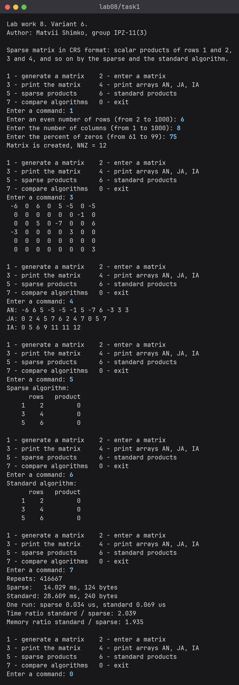

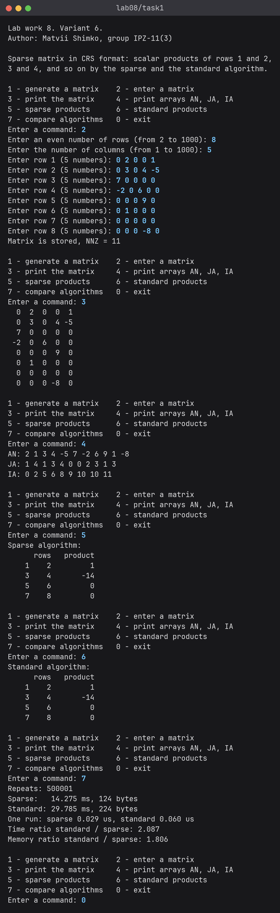

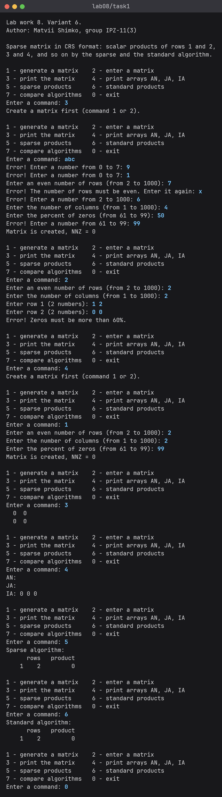

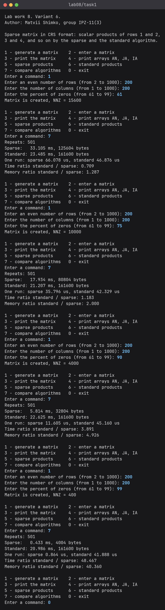
Лабораторна робота №8 / 07 з 08
7. Аналіз достовірності результатів
Ручна перевірка на контрольній матриці
Для перевірки вручну взято матрицю 8 x 5. У ній є спільні стовпці, пара рядків без спільних стовпців і порожній рядок. Ненульових елементів 11, нулів 29 з 40, тобто 72.5%.
0 3 0 4 -5
7 0 0 0 0
-2 0 6 0 0
0 0 0 9 0
0 1 0 0 0
0 0 0 0 0
0 0 0 -8 0
Масиви CRS, складені вручну по рядках:
Таблиця 3 - Масиви CRS контрольної матриці
| Масив | Ручний розрахунок | Програма |
|---|---|---|
| AN | 2 1 3 4 -5 7 -2 6 9 1 -8 | 2 1 3 4 -5 7 -2 6 9 1 -8 |
| JA | 1 4 1 3 4 0 0 2 3 1 3 | 1 4 1 3 4 0 0 2 3 1 3 |
| IA | 0 2 5 6 8 9 10 10 11 | 0 2 5 6 8 9 10 10 11 |
Рядок 7 порожній, тому в IA двічі стоїть 10. Останній елемент IA дорівнює NNZ = 11.
Таблиця 4 - Скалярні добутки контрольної матриці
| Рядки | Спільні стовпці | Ручний розрахунок | Команда 5 | Команда 6 |
|---|---|---|---|---|
| 1, 2 | 1 і 4 | 2 · 3 + 1 · (-5) = 1 | 1 | 1 |
| 3, 4 | 0 | 7 · (-2) = -14 | -14 | -14 |
| 5, 6 | немає | 0 | 0 | 0 |
| 7, 8 | рядок 7 порожній | 0 | 0 | 0 |
Пам'ять: CRS (2 · 11 + 8 + 1) · 4 = 124 байти, матриця 8 · 8 + 8 · 5 · 4 = 224 байти, відношення 224 / 124 = 1.806. Програма вивела ті самі значення.
Перевірка на згенерованих матрицях
На згенерованій матриці 6 x 8 команди 5 і 6 дали однакові значення, хоча одна працює з масивами CRS, а друга з повною матрицею. Нулів у ній 36 з 48, тобто 75%. NNZ = 12, пам'ять CRS (2 · 12 + 6 + 1) · 4 = 124 байти.
Для матриці 200 x 200 при 90% нулів: NNZ = 200 · 200 · 10 / 100 = 4000, пам'ять CRS (2 · 4000 + 201) · 4 = 32804 байти, матриці 200 · 8 + 40000 · 4 = 161600 байтів. Повторів 20000000 / 40000 + 1 = 501. Програма вивела такі самі числа.
Порівняння алгоритмів
Числа взято з одного запуску останнього сценарію для матриці 200 x 200, у кожному вимірі 501 повтор.
Таблиця 5 - Час і пам'ять при різній частці нулів
| Нулів | NNZ | Час CRS, мс | Час стандартний, мс | Відношення часу | Пам'ять CRS, байт | Пам'ять матриці, байт | Відношення пам'яті |
|---|---|---|---|---|---|---|---|
| 61% | 15600 | 33.105 | 23.485 | 0.709 | 125604 | 161600 | 1.287 |
| 75% | 10000 | 17.934 | 21.207 | 1.183 | 80804 | 161600 | 2.000 |
| 90% | 4000 | 5.814 | 22.625 | 3.891 | 32804 | 161600 | 4.926 |
| 99% | 400 | 0.433 | 20.986 | 48.467 | 4004 | 161600 | 40.360 |
Час трохи різний від запуску до запуску, а пам'ять від запуску не залежить.
- Час стандартного алгоритму майже не змінюється, бо він завжди перебирає всі елементи.
- Час алгоритму для CRS зменшується разом з NNZ, пам'ять CRS теж.
- При 61% нулів алгоритм для CRS виявився повільнішим за стандартний. Він порівнює номери стовпців, а стандартний алгоритм лише множить і додає.
Некоректні дані і пам'ять
Таблиця 6 - Перевірка некоректних даних
| Введено | Очікувана реакція | Результат програми |
|---|---|---|
| команда 3 до створення матриці | повідомлення | Create a matrix first (command 1 or 2). |
| abc або 9 замість команди | повторне введення | Error! Enter a number from 0 to 7: |
| 7 рядків | повторне введення | Error! The number of rows must be even. |
| 50% нулів | повторне введення | Error! Enter a number from 61 to 99: |
| матриця 2 x 2 з рядками 1 2 і 0 0 | не зберігається, бо нулів 50% | Error! Zeros must be more than 60%. |
| матриця 2 x 2 при 99% нулів | NNZ = 0, порожні AN і JA, IA = 0 0 0, добуток 0 | такі самі значення |
Пам'ять звільняється функцією freeMemory, після цього покажчики стають
NULL.
Лабораторна робота №8 / 08 з 08
8. Висновки
Розроблено програму для розрідженої матриці у форматі CRS. Команди меню викликаються через покажчики на функції, пам'ять виділяється динамічно, а рядки перемножуються парами двома алгоритмами. На контрольній матриці 8 x 5 обидва алгоритми дали ті самі значення, що й ручний розрахунок. CRS у всіх вимірах займав менше пам'яті. За часом алгоритм для CRS на матриці 200 x 200 виграв при 75%, 90% і 99% нулів, а при 61% працював повільніше за стандартний.